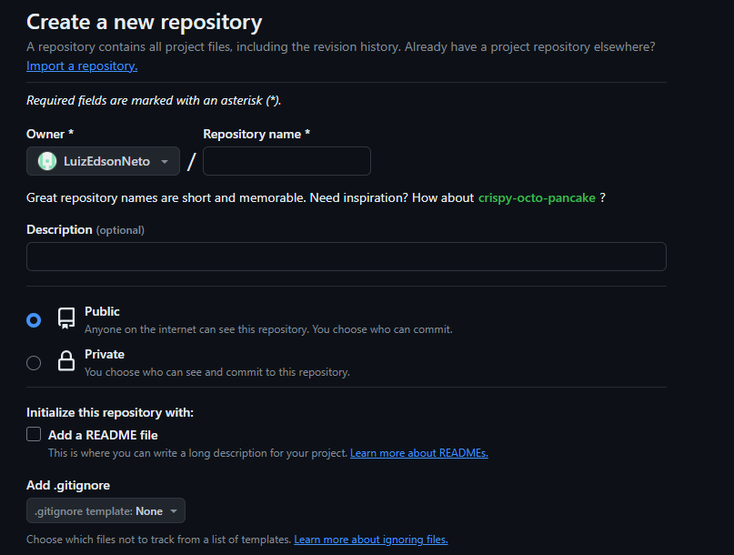
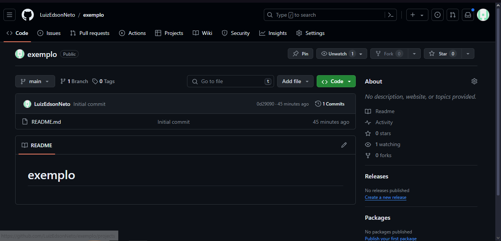
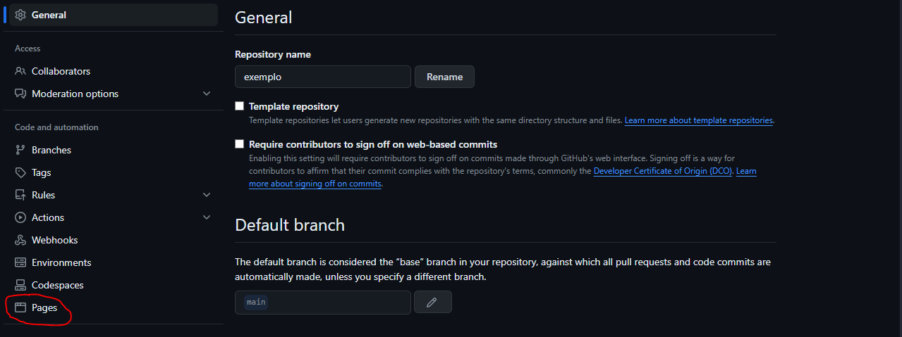
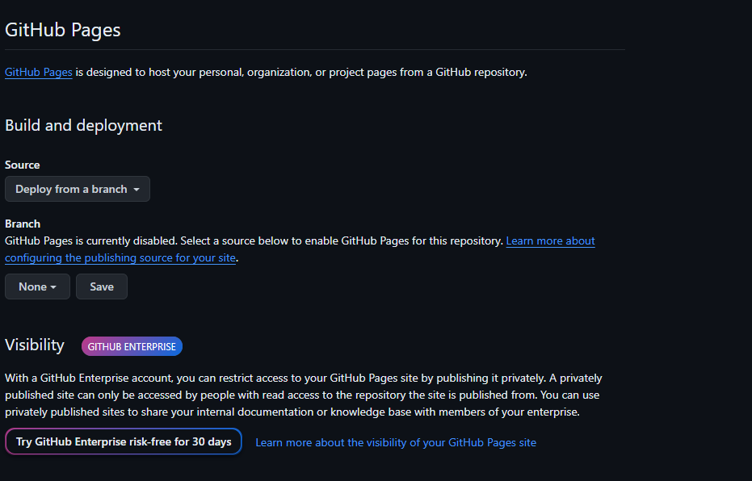

Criação de site
Muitas pessoas ja pensaram em criar um site pra algo, porém essa ideia nunca saiu do papel devido a falta de conhecimento para realizar isso, com isso resolvi criar esse site pra ensinar como fazer um espero que goste!
Por onde começar?
Pra inicio é importante achar um site que te der a oportunidade disso uma das recomendações seria o site Github, mais adiante ensinaremos como começar a partir dele, porém, caso não se sinta confrotavel com esse site, também temos os sites Vercel e Surge.
O Github

Primeiramente você irá precisar criar uma conta no Github, para isso você entra nesse link e clica em "create a new public repository" no painel abaixo

Após criar sua conta você será redirecionado para uma página com a seguinte aparência
Você,então, irá colocar o nome que deseja para o site e vai marcar a opção "add a Readme file" , feito isso você clica em "Create repository" e será redirecionado para a seguinte página:
Estando nessa pagina você pode editar o arquivo "Readme" e colocar um titulo e uma descrição, apertando em "Commit changes" e confirmando para finalizar a edição
Para colocar o site no ar você deve ir nas configurações e clicar na opção "Pages" e então irá na parte "branch" clicar em "none",selecionar a opção "main" e então apertar em "save", com isso o seu site vai começar a ser criado

ATENÇÃO: o site demora um tempo pra ser completamente criado, então espere um pouco e reinicie a pagina para o seu link aparecer
Tendo feito isso começaremos a programar o site,no qual vamos usar, por agora, as liguagens HTML e a CSS, que iremos explorar elas mais adiante